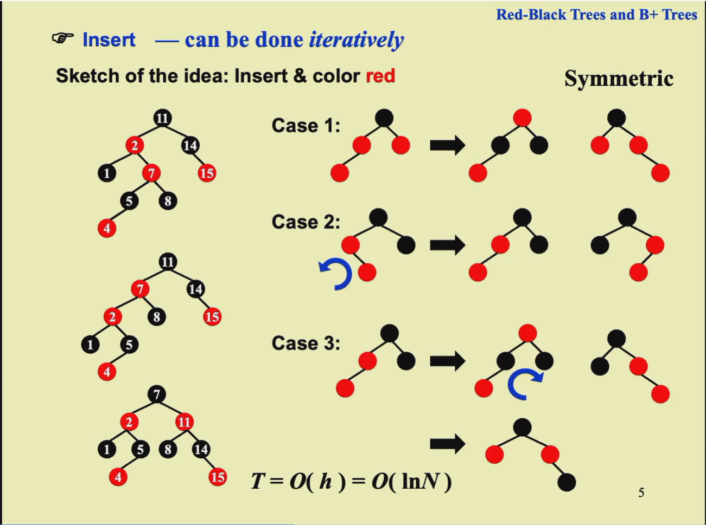

高级数据结构
2024 / 9 / 13
AVL Tree and Splay Tree¶
Abstract
本节课约定空树的高度定义为-1
AVL Trees¶
目的
保持树的高度平衡，使得树的高度为\(O(\log n)\), 并且AVL树的搜索、插入和删除操作的时间复杂度为\(O(\log n)\).
Definition
Empty tree is height balanced. And T is height balanced iff \(T_L\) and \(T_R\) is height balanced and \(|h_L - h_R| <= 1\)
Balance factor(BF) = \(h_L - h_R\) .In AVL trees, BF is either -1, 0, 1
\(n_h\) is the minimum number of nodes in a height balanced tree of height h. Then h = \(O(\log n)\). So the time complexity of insertion and search is \(O(\log n)\)
只需要转一次,注意是Aug在转
需要转两次,注意是Mar先左转,再右转
结论是\(最小的n_h = F_{h+2} - 1\)(F为Fibonacci数)
Splay Trees¶
目的
Any M consecutive operations starting from an empty tree take at most \(O(M\log n)\) time
\(T_amortized = O(\log n)\)
Zig-Zag:先左转X,再右转X Zig-Zig:先右转P,再右转X
Amortized Analysis(均摊分析)¶
均摊分析与概率无关
a sequence of n operations takes worst-case time \(T(n)\) in total, then the amortized time per operation is \(T(n)/n\)
When an operation's amortized cost exceeds its actual cost, the difference is assigned to specific objects in the data structure as credit. This credit can be used to pay for later operations.
For example:

对Splay Tree进行使能法的分析:¶
定义:
公式
\(T_{amortized} = O(\log N)\)
If \(a+b <= c\) then \(\log a + \log b <= 2\log c - 2\)
具体过程: Zig-zig中,补充了一个\(R_1(X)\),这样子\(R_2(G)+R_1(X) <= 2R_2(X) - 2\).(\(R_2(G)\)有儿子C,D.\(R_1(X)\)有儿子A,B,而\(R_2(X)\)有A,B,C,D,所以可以用这个等式),此时消去了常数,便可以直接将原本的\(R_2(P)放大为R_2(X)\),便可得到最终结果.
然后将Zig, Zig-zag的常数外的部分放大三倍,便可得到最终结果.
Theorem: The amortized time to splay a tree with root T at node X is at most \(3(R(T)-R(X))+1 = O(\log n)\)
Red-Black Trees and B+ Tree¶
Red-Black Trees¶
第四点定义是因为红黑树中存在哨兵,所有的叶子都会再指向哨兵,所以哨兵成为了最终的叶子(黑色)

Definition
- The black-height of a node is the number of black nodes on the path from the node to a leaf, not counting the node itself.Denoted by bh(x).
- A red-black tree with N internal nodes(不包含哨兵) has height at most \(2\log(N+1)\)

- Concrete process: Case1(Iterative) -> Case2 -> Case3 ->End 时间复杂度为\(O(\log N)\)
此处的PPT并没有那么清晰,建议看wyy的ADS讲义

B+ Tree¶
Inverted File Index¶
此处建议将PPT看一下,对应时间为2024/9/29

Precision(精准率): 所有返回的文档中,正确文档的比例 Recall(召回率): 所有正确文档中,返回的文档的比例
Leftist Heaps and Skew Heaps¶
Leftist Heaps¶
pseudo Code:
Note
- A leftist tree with r nodes on the right path must have at least \(2^r-1\) nodes.So the Leftis tree of N nodes has a right path containing at most \(\log (N+1)\) nodes.
Skew Heaps¶
人话:一个节点p的右子树节点数大于左子树,则p为heavy
Binomial Queues(二项队列)¶
- 构建一个堆的时间复杂度为\(O(N)\)
结论:从空的树开始,均摊代价为\(O(1)\)
注意:这个连接顺序是按照树高由大到小的 但是也要注意到,根节点的值是最小的
Backtracking¶
八皇后¶
八皇后问题较为简单,直接跳过
The Turnpike Reconstruction Problem¶
博弈Tic-tac-toe¶

\(\alpha - \beta\)¶
回溯问题的模板:
bool BackTracking(int i){
Found = flase;
for(each xi in Si){
OK = Check((x1,.....,xi),R); //检查是否满足条件,进行剪枝
if(OK){
Count xi in;
Found = BackTracking(i+1);
if(!Found) Undo(i); //复原对xi的操作以回溯
}
if(Found) break;
}
return Found;
}
Divide and Conquer¶
当猜的比较松时,会出错
可以猜的不那么严谨,再用Substitution来证明
Dynamic Programming¶
Greedy Algorithm¶
NP-Completeness¶
Definition
NP: Nondeterministic Polynomial time The problem is NP if we can prove any solution is true in polynomial time